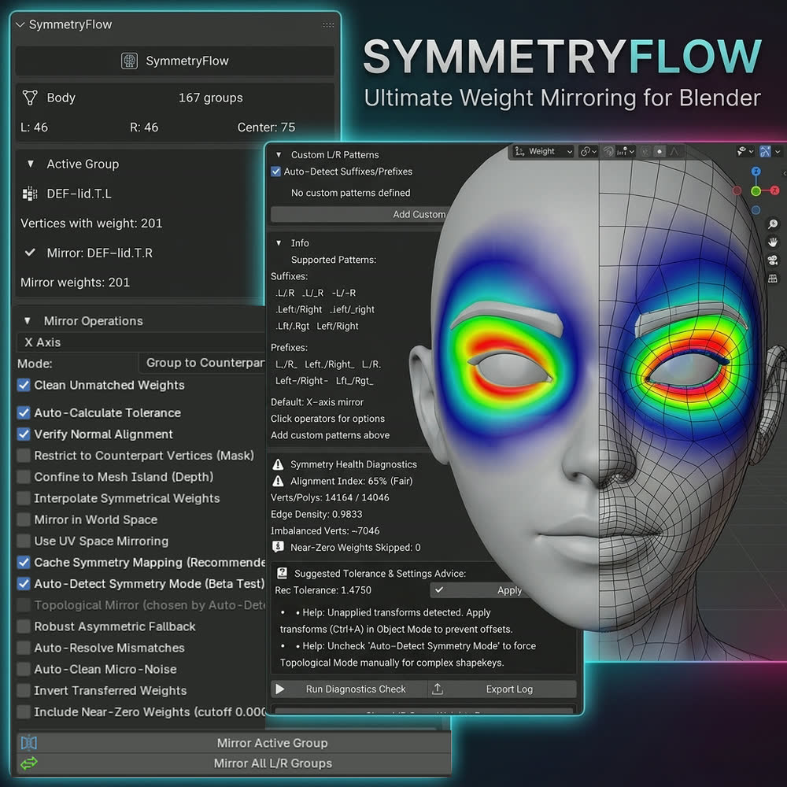

Mirror weights on the meshes that break X-Mirror.
SymmetryFlow mirrors and transfers vertex-group weights across a character — then tells you, group by group, whether the two sides actually match. When they don’t, one button repairs them.

Blender’s mirror stops at the first vertex that isn’t an exact twin.
It is coordinate-based and all-or-nothing. On a production character that means the eyelids, lips, ears, teeth, brows and lashes — every part you actually need to get right.
This is not a bug in any Blender version. It has always worked this way. It is simply not built for meshes that have stopped being tidy.
Two matching engines, chosen automatically.
Auto-Detect tests each group and picks the right one. Above both sits a maximum-matching pass that finds the true set of vertex partners instead of leaving stragglers mislabelled as unpairable.
Topological
Walks the mesh’s own edge connectivity, so it stays correct on posed meshes and shape keys — where the two sides are in completely different places in space and a coordinate mirror cannot pair them at all.
Spatial KD-tree
Queries mirrored positions in O(log N), for the meshes topology cannot handle: disconnected islands, asymmetric edge flow, parts-assembled and shell-split geometry.
A verification layer
The L/R Balance panel reports every pair as Balanced, Mismatched or Distorted. The verdict you read is produced by the same function Quick Fix acts on — report and repair cannot contradict each other.
Most tools mirror. This one tells you whether the mirror landed.
If a region genuinely cannot be mirrored — because one side has no matching vertex at all — it says so, by name, instead of quietly doing something wrong.
Rebuild every pair in one press.
Mirror All L/R Groups pairs every group by name, creates the counterparts that are missing, mirrors each in the auto-detected direction, then runs a self-heal pass against the same metric the panel reports.
Four options, and what each one changes.
Each clip mirrors the same group twice — once with the box unticked, once with it ticked — so what you are looking at is the difference the option makes. All of it recorded against a live Blender session with the pointer pressing the actual buttons; nothing scripted the result into place.
It writes only where it can prove a counterpart.
Restrict to Counterpart Vertices masks the mirror to the source’s weighted vertices and their true counterparts, and refuses to write anywhere else.
On a foot it has almost nothing to refuse — 852 vertices unticked, 851 ticked — so the transfer completes and you see what the option leaves behind rather than what it withholds. It earns its keep where a spatial match would otherwise grab a vertex on the surface behind: a lash in front of an eyelid, an upper lip against a lower one.
The mask stays armed afterwards — 1,702 vertices left selected, exactly the ones the mirror was allowed to touch, ready to paint.
It works on a rig that is out of rest pose.
Take the armature out of rest pose and the two sides are no longer at mirrored coordinates — there is nothing for a spatial mirror to pair. SymmetryFlow reads the weights from the unposed mesh, so the mirror still lands.
Some groups have no counterpart.
A centre-line group — a head, a spine, an eyelash strip — spans both sides at once, so there is no Arm.L to take from. The fix is to mirror the group onto itself.
Perfect Single Mirror does that in one press, in whichever direction you choose, and reports the same way every other operation does.
What it cannot do.
We would rather you know this before buying than after.
It cannot make an asymmetric mesh symmetrical.
Where one side has no matching vertex, no tool can place a weight exactly. SymmetryFlow names those groups instead of guessing. Robust Asymmetric Fallback closes most of the rest: on the add-on’s own asymmetric fixture it takes the mirrored side from 56% of the source’s weighted vertices to 99%. The last seven vertices of 678 it does not reach.
Vertex counts may differ on faces.
Character faces are often not vertex-aligned across the mirror plane, so a rebuilt side can hold the same weights on a few more vertices. The weights are right; the tally differs.
Hair, lashes and brows take minutes.
Thousands of small overlapping pieces, and the matching work is genuinely large. Blender will look frozen — it is working. SymmetryFlow warns you before it starts, so you can save first or cancel.
Two downloads. Take one.
Same add-on, same features. They differ only in packaging, because Blender changed its add-on system in 4.2. Don’t unzip either — Blender installs from the zip.
Those two releases contain a bug in Blender itself — any add-on that highlights vertices then leaves Weight Paint mode closes Blender instantly, losing unsaved work. We reproduced it with SymmetryFlow completely uninstalled. Blender fixed it in 5.1.
Stop guessing whether the mirror worked.
Source included, with a full manual, a known-issues document written plainly and with measurements, and the complete changelog.
GPL-2.0-or-later · source included · dev.luv@outlook.com